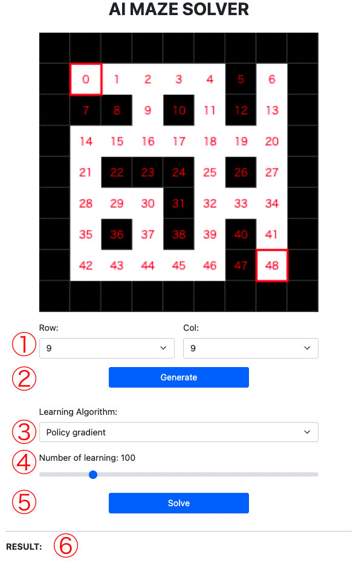

Details of Work2
-Overview
This is an educational app to understand how AI algorithms work. In this app, you can see the difference between Policy descent, Q-learning, and Sarsa. Policy gradient takes time and learning times the most, whereas Q-learning solves the maze quickest and looks most efficient. As for Sarsa, it takes the longest time at the very beginning of learning and then gets faster.
-How to play

-Algorithm
Policy Gradient
θ: value for the action in the state, s:state, a:action, η:learning rate, N:the number of the action in the state, P:probability of the action in the state, N(s): the number of all actions in the state
Q-learning
Q:current value, s:state, a:action, η:learning rate, R:reward, γ:discount factor, maxQ: optimal value in the next state
Sarsa
-Insight
According to the algorithms mentioned above, Policy gradient updates its weight for each learning, not each step as the rest of the two do, so that it takes a much greater number of learning. Q-learning and Sarsa are almost the same, except the former is off-policy while the latter is on-policy. Q-learning determines Q value, referring the next state and takes the maximum value in the state no matter what the next actual action is. Note that it sometimes takes a random action in case ε-greedy applied. On the other hand, Sarsa determines Q value based on the actual next action, so the timing of updating Q value is in the next state, which is one step further compared with Q-learning.In other words, Q-learning is confident and Sarsa is careful as the Cliff Walking(Ref.2) shows.